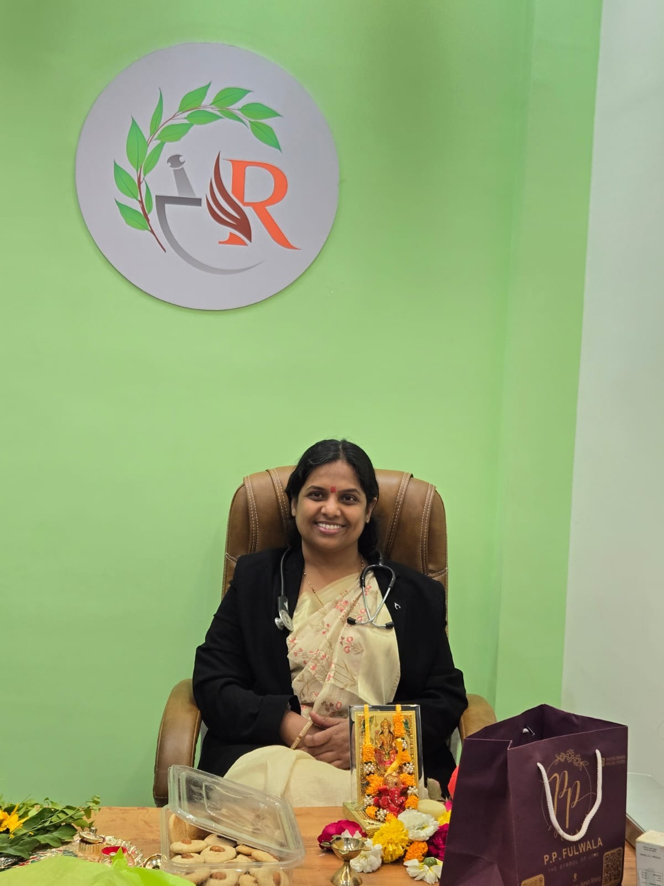

Panchakarma
Classical purification therapies tailored to individual needs.
Panchkarma and Yoga-Care in Rajkot, India.
Healing begins with understanding
person behind the illness.
Balance in body, mind, and lifestyle
leads to lasting wellness.
Classical purification therapies tailored to individual needs.
Ayurvedic care through hormonal and reproductive health concerns.
Supporting digestion by restoring internal balance.
Personalized Ayurvedic care for recurring skin concerns.
Helping restore balance in today's fast-moving lifestyles.
Pulse-based assessment used to understand the individual before treatment.
Therapeutic movement supporting recovery, mobility, and balance.

Practical everyday changes that support lasting health.
Rooted in Classical Ayurveda. Dedicated to Personalized Healing.
Graduation from Tilak Ayurveda Mahavidyalaya, Pune
Dr. Minakshee Ashok Bagal Telang and Dr. Vijay Manik Telang began their Ayurvedic journey by graduating from Tilak Ayurveda Mahavidyalaya, Pune—one of India's oldest and most respected institutions for Ayurvedic education.
Clinical Training under Vaidya Dilip Gadgil
Their practical clinical training under the renowned Ayurvedic physician Vaidya Dilip Gadgil shaped their approach to classical diagnosis, authentic treatment, and compassionate patient care.
Advanced Education & Clinical Experience
Dr. Minakshee pursued MD Ayurveda (Rachana Sharir) along with an MA in Sanskrit Vyakarana, while building expertise in Panchakarma, Yoga, women's health, preventive care, and anatomical research.
Dr. Vijay completed MD Ayurveda and gained valuable experience in both Ayurveda and cardiac intensive care, developing a special interest in cardiac, renal, and lifestyle-related disorders.
Establishing Authentic Ayurvedic Care in Rajkot
With a shared vision of delivering classical yet practical Ayurveda, they founded Riddhi Ayurveda Clinic to provide personalized, holistic healthcare based on authentic Ayurvedic principles.
Individual-Centred Treatment
Every treatment plan is thoughtfully designed according to the patient's constitution, disease condition, age, strength, and lifestyle, combining Ayurvedic medicines, Panchakarma, Yoga, diet, and sustainable lifestyle guidance.
Ayurveda for Modern Living
Today, Riddhi Ayurveda Clinic continues its mission of making authentic Ayurveda practical, responsible, and relevant to modern life while remaining firmly rooted in classical Ayurvedic wisdom.
Experience personalized Ayurvedic care designed for long-term wellness.
Book a ConsultationEducated at the renowned Tilak Ayurveda Mahavidyalaya, Pune, and disciples of the great Vaidya Dr. Dilip Gadgil, Pune.

Consultant
MD Ayurveda | PhD Scholar
MA Sanskrit Vyakarana | Jyotish Pravin
Specialised in Panchakarma, Nadi Pariksha and Yoga-based therapies, with an approach rooted in careful assessment and deeply personalised care.
Availability
Monday, Wednesday & Friday
6:30 PM–8:30 PM
Chief Consultant & Director
BAMS | MD Ayurveda | PhD Scholar
An Ayurvedic physician with more than five years of Cardiac ICU experience and a special interest in preventive cardiac wellness and long-term health.
Availability
Tuesday & Thursday
6:30 PM–8:30 PM
2nd & 4th Sunday
10:00 AM–1:00 PM
BEGIN YOUR JOURNEY
Reach out to schedule a consultation or speak with the clinic team.
RIDDHI Ayurveda Clinic
Shop No. 206, Atulyam Prime,
Morbi Bypass Road, Ronki, Rajkot.
Clinic Hours
Monday–Saturday
6:30 PM–8:30 PM
Sunday by appointment.